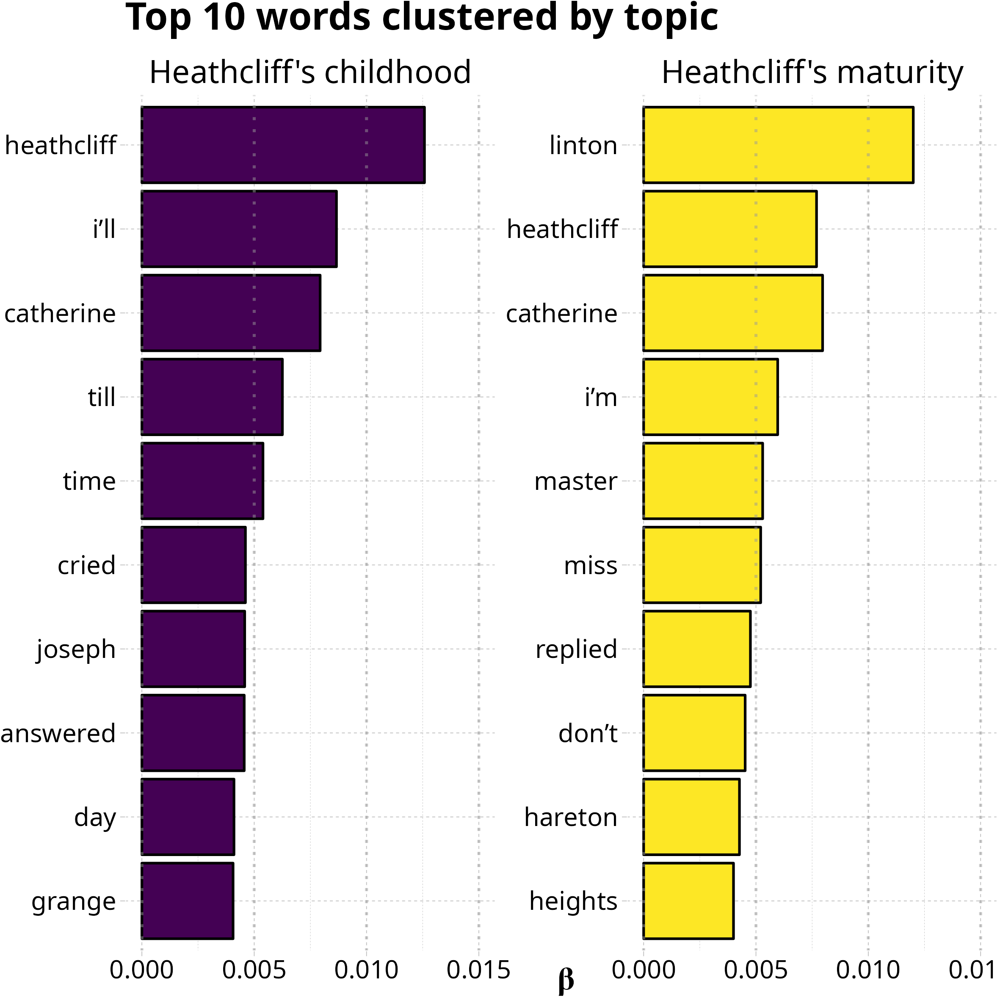

In this blog post I will engage in something a bit more serious than playing with static or dynamic images (although, admittedly, it’s a lot of fun). I will show you my first attempt at analyzing a document using the wonderful tidytext package.
tidytext allows to sort the constituent elements of a text (e.g., single words or n-grams) following Hadley Wickham’s tidy principles:
It then becomes quite easy to extrapolate word frequencies (how often they occur) and word correlations (do specific words follow each other?), run sentiment analysis (overall positive/negative emotional connotation of the text), and topic modeling (i.e., identify words associated with a pre-specified number of overarching topics). All this can be done in a single document, across the body of work of an author, or large heterogeneous datasets (e.g., tweets).
For this exercise, I decided to explore Wuthering Heights by Emily Brontë. When I read it (a long, long time ago), I was not particularly hit by the troubled love between Heathcliff and Catherine – although I was definitely attracted by the uncontainable, raw, and primordial vortex of passion that pervaded their relationship –, but rather by Heathcliff’s quest for revenge against the upper class, especially embodied by Hindley and Edgar.
Besides my appreciation for the novel, the choice of analyzing Wuthering Heights also came from practical considerations:
gutenbergr package;Following the instructions in Julia Silge and David Robinson’s fantastic book Text Mining with R, I was able to download the text, separate it into individual words, and eliminate stop words (e.g., “the”, “of”, “to”) which are not informative. Then I decided to extract word frequency, perform sentiment analysis, and topic modeling.
The first step was to quantify how often words were used across the 34 chapters of the novel, to have an initial idea of the content. So, I counted the number of occurrences for each word and selected only the most common ones (i.e., occurring at least 100 times).
Unsurprisingly, the name of the protagonist is the most frequent word in the novel, with 421 occurrences. The name of the co-star also pops up: Catherine Earnshaw (336 occurrences). It’s quite interesting to see the word Linton (346 occurrences) between Heathcliff and Catherine: the two protagonists passionately love each other, but Catherine is seduced by the elegant manners of the Lintons and decides to marry Edgar (114 occurrences).
Master is another frequent word… why? Well, Heathcliff marries Isabella Linton, a calculated act of revenge that allows him to become the legal owner of Thrushcross Grange. Later, he forces Cathy (Catherine and Edgar’s daughter; 130 occurrences) and Linton (Heathcliff and Isabella’s son)2 to get married, thus becoming Cathy’s father-in-law. When Edgar dies, Heathcliff becomes the master of Wuthering Heights.
This novel is dark. No wonder that it was received with mixed reviews when its first edition was published in 1847. The Wikipedia page on Wuthering Heights quotes a passage from a review originally published on Graham’s Lady Magazine:
“How a human being could have attempted such a book as the present without committing suicide before he had finished a dozen chapters, is a mystery. It is a compound of vulgar depravity and unnatural horrors.”
This spicy quote obviously urged me to explore what kind of emotions are conveyed by this devilish work of moral corruption. I extracted sentiment classifications from the NRC Word-Emotion Association Lexicon and selected four emotions: anger, fear, joy, and sadness.
Here are the 10 most frequent words in each emotion class:
Indeed, tragedy seems to be omnipresent in the life of these characters. Ill occurs 1 times, death 46 times: Catherine Earnshaw “becomes ill” when emotionally upset (which happens fairly often) and dies right after giving birth to Cathy; Linton is a sickly boy; Edgar’s physical states rapidly deteriorates, until the Grim Reaper finally claims his soul3. The terror of physical ailments is palpable throughout the novel, and quite reasonably given the numerous diseases spreading throughout Europe in the 19th century (cholera, typhus, smallpox, …).
We can also see words considered emotionally negative but actually used in neutral ways in the novel: for instance, fire is categorized as conveying fear in the NRC lexicon, but Emily Brontë mostly uses it to indicate a cooking fire, a cosy fireplace, or candle light. A funny misattribution is also evident with the word mistress, obviously used as a form of courtesy in Wuthering Heights but rated as conveying anger in the NRC lexicon because… because… because BDSM? No idea.
Finally, the word love occurs 2 times. The NRC lexicon classifies it as a joyful word but I wouldn’t be so sure in this case.
Just for fun, I also made a word cloud with the top 50 words categorized as positive or negative according to the lexicon by Bing Liu and collaborators.
Finally, I used Latent Dirichlet Allocation (LDA), a popular unsupervised Bayesian classification method, to divide the terms into 2 sections, hoping to somehow pick up the different events occurring during Heathcliff’s childhood as opposed to his later years.

Heathcliff, Catherine, and the Lintons (especially Edgar) are the major characters in this book, so it’s obvious to find their names in both topics. The Earnshaw family seems to be more frequent in the first topic, which makes sense. In particular, the role of Mr. Earnshaw is pivotal: he is the one who travels to Liverpool, finds and adopts the orphan Heathcliff, and brings him to Wuthering Heights.
Besides characters’ names, some words seem to be more probable in one topic compared to the other. For example, master is more common in topic 2, because Heathcliff becomes the master of both Wuthering Heights and Thrushcross Grange later on in the novel.
So, the LDA algorithm might have picked up the intended subdivision, although it may work much more efficiently when subdividing several documents into topics (because of the larger amount of data).
Alright, this was a long post but I had a lot of fun exploring this classical English novel. There are so many other amazing things that you can do with tidytext… if you’re curious, check out Text Mining with R!
Below you will find the code to reproduce my first attempt at text mining… try with your favorite book, or expand this process by including all the works of your preferred writer!
# load relevant packages
library(tidytext)
library(gutenbergr)
library(tidyverse)
library(reshape2)
library(textdata)
library(wordcloud)
library(topicmodels)
library(ggthemes)
library(viridis)
WH_ID <- filter(gutenberg_metadata, author == "Brontë, Emily") # extract metadata for Emily Brontë's "Wuthering Heights"
WH <- gutenberg_download(WH_ID$gutenberg_id) %>% # download text
unnest_tokens(word, text) %>% # split text into individual words
anti_join(stop_words) # eliminate stop words (e.g., "the", "of", "to", ...)
##################################################################################
############################ WORD FREQUENCY ######################################
##################################################################################
# what are the most common words used in this book?
WH %>%
count(word, sort = TRUE) %>% # count number of occurrences of each word
filter(n >= 100) %>% # keep only words whose count is > 100
mutate(word = reorder(word, n)) %>% # reorder words as a function of number of occurrences
ggplot(aes(word, n)) + # plot
geom_col(aes(fill = word), color = "black", size = .7, show.legend = FALSE) + # bars
scale_y_continuous(breaks = seq(0, 450, 50)) + # x-axis: tick marks
geom_hline(
yintercept = seq(0, 450, 50), # reference lines
linetype = "dotted", # line: type
colour = "#999999", # line: color
size = .8, # line: thickness
alpha = .5 # line: transparency
) +
geom_text(aes(label = n), # add numbers next to bars
size = 5, # text size
position = position_dodge(.9), vjust = .5, hjust = -.2 # text position
) +
labs(
title = "Word frequency in \"Wuthering Heights\"", # labels: title
x = NULL, # labels: x-axis
y = "number of occurrences" # labels: y-axis
) +
coord_flip() + # flip axes
scale_fill_viridis(option = "magma", discrete = TRUE) + # colors
theme_pander(base_size = 18, pc = "white") # custom theme
##################################################################################
############################ SENTIMENT ANALYSIS ##################################
##################################################################################
# get sentiment classifications from the NRC lexicon
nrc_emo <- get_sentiments("nrc") %>%
filter(sentiment == "joy" |
sentiment == "anger" |
sentiment == "fear" |
sentiment == "sadness")
WH_emo <- WH %>%
inner_join(nrc_emo) %>% # match words and sentiments
count(word, sentiment) %>% # count occurrences while keeping sentiment information
arrange(sentiment) # sort according to sentiment
# what are the most common words split into joy, anger, fear, and sadness?
WH_emo %>%
group_by(sentiment) %>%
top_n(10) %>% # take the top 10 words for each sentiment class
ungroup() %>%
mutate(word = reorder(word, n)) %>% # reorder words as a function of number of occurrences
ggplot(aes(word, n, fill = sentiment)) + # plot
geom_col(color = "black", size = .7, show.legend = FALSE) + # bars
scale_y_continuous(breaks = seq(0, 125, 25)) + # x-axis: tick marks
geom_hline(
yintercept = seq(0, 125, 25), # reference lines
linetype = "dotted", # line: type
colour = "#999999", # line: color
size = .8, # line: thickness
alpha = .5 # line: transparency
) +
geom_text(aes(label = n), # add numbers next to bars
size = 5, # text size
position = position_dodge(.9), vjust = .5, hjust = -.2 # text position
) +
labs(
title = "Top 10 words clustered by sentiment", # labels: title
x = NULL, # labels: x-axis
y = "number of occurrences" # labels: y-axis
) +
scale_fill_viridis(option = "viridis", discrete = TRUE) + # colors
facet_wrap(~sentiment, scales = "free_y") + # subplots according to sentiment
coord_flip() + # flip axes
theme_pander(base_size = 18, pc = "white") # custom theme
# wordcloud
WH %>%
# match words and sentiments, this time from the sentiment lexicon of Liu et al. (positive/negative classes)
inner_join(get_sentiments("bing")) %>%
count(word, sentiment, sort = TRUE) %>%
group_by(sentiment) %>%
top_n(50) %>% # take the top 50 words for each sentiment class
ungroup() %>%
mutate(word = reorder(word, n)) %>% # reorder words as a function of number of occurrences
acast(word ~ sentiment, value.var = "n", fill = 0) %>% # comparison.cloud requires matrix
comparison.cloud(colors = c("#ab3400", "#469280")) # cloud representation of occurrence of positive and negative words
##################################################################################
############################ TOPIC MODELING ######################################
##################################################################################
# prepare data for topic modeling
WH_DocumentTermMatrix <- WH %>%
count(word, sort = TRUE) %>% # count number of occurrences of each word
mutate(
book = "Wuthering Heights", # add book name (necessary for cast_dtm)
word = reorder(word, n) # reorder words as a function of number of occurrences
) %>%
cast_dtm(book, word, n) # one term per row
# Latent Dirichlet Allocation
WH_LDA <- LDA(WH_DocumentTermMatrix,
k = 2, # before/after Heathcliff runs away from Wuthering Heights?
control = list(seed = seed_smorfia) # set seed for RNG
)
WH_LDA_topics <- tidy(WH_LDA, matrix = "beta") %>% # extract beta coefficients from model
group_by(topic) %>%
top_n(10, beta) %>% # take the top 10 words for each topic
ungroup() %>%
mutate(
term = reorder(term, beta), # reorder terms according to beta values
topic = recode(factor(topic), # rename topics
"1" = "Heathcliff's childhood",
"2" = "Heathcliff's maturity"
)
)
ggplot(WH_LDA_topics, aes(term, beta, fill = factor(topic))) + # plot
geom_col(color = "black", size = .7, show.legend = FALSE) + # bars
scale_y_continuous(breaks = seq(0, .015, .005)) + # x-axis: tick marks
geom_hline(
yintercept = seq(0, .015, .005), # reference lines
linetype = "dotted", # line: type
colour = "#999999", # line: color
size = .8, # line: thickness
alpha = .5 # line: transparency
) +
labs(
title = "Top 10 words clustered by topic", # labels: title
x = NULL, # labels: x-axis
y = expression(beta) # labels: y-axis
) +
scale_fill_viridis(option = "viridis", discrete = TRUE) + # colors
facet_wrap(~topic, scales = "free_y") + # subplots according to topic
coord_flip() + # flip axes
theme_pander(base_size = 18, pc = "white") # custom themeMany thanks to wuthering-heights.co.uk, SparkNotes, and the omnipresent Wikipedia.↩︎
Indeed, the high frequency of “Linton” may not only refer to the Linton family, but also Heathcliff and Isabella’s son… damn, Miss Brontë, why did you have to repeat the same names over and over again?!?↩︎
There is also another character who is ill: Lockwood, a wealthy British man who rents Thrushcross Grange, meets Heathcliff at Wuthering Heights, freaks out when he dreams about Catherine Earnshaw’s ghost, and then gets ill. During his convalescence, he is told the whole story by Nelly Dean, the housekeeper of Thrushcross Grange.↩︎